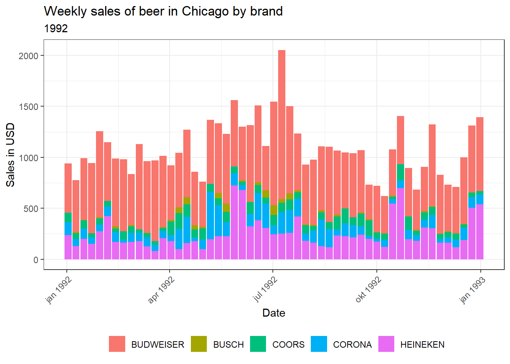
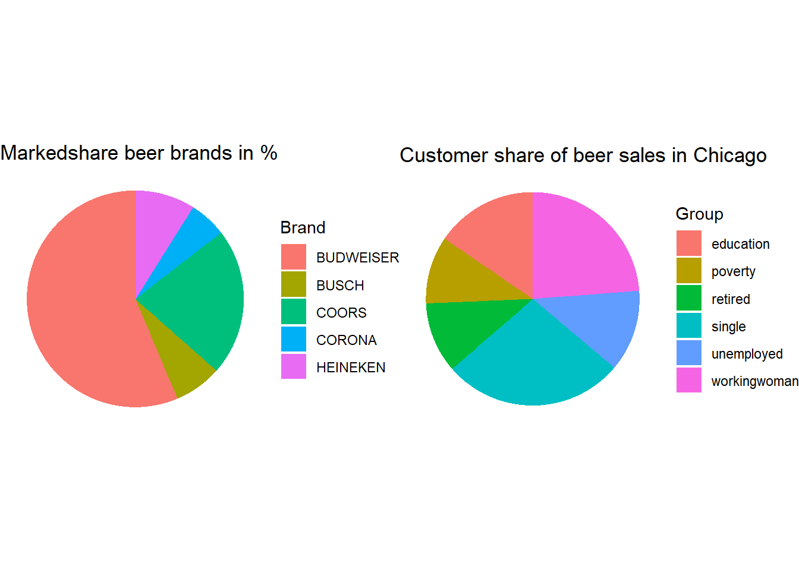
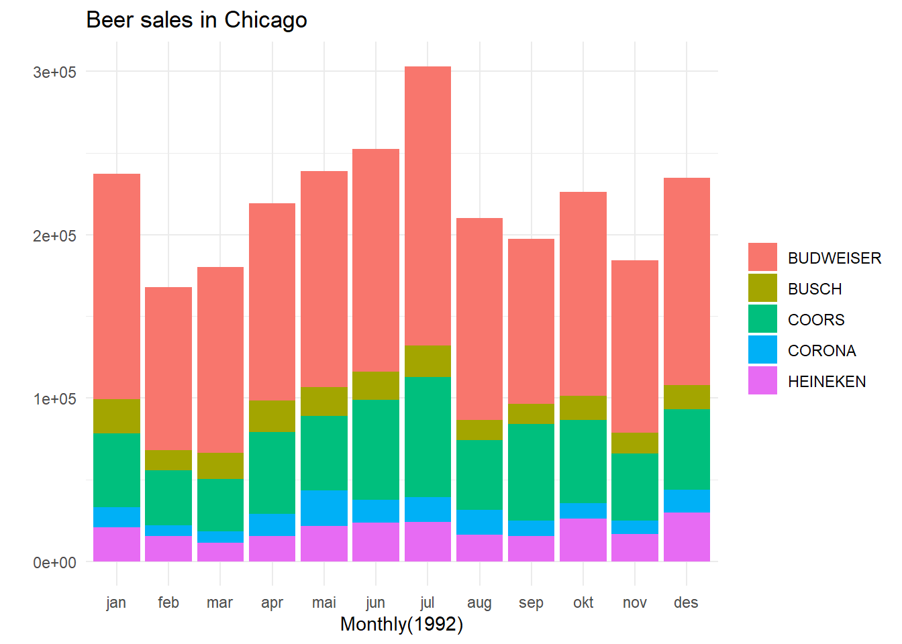
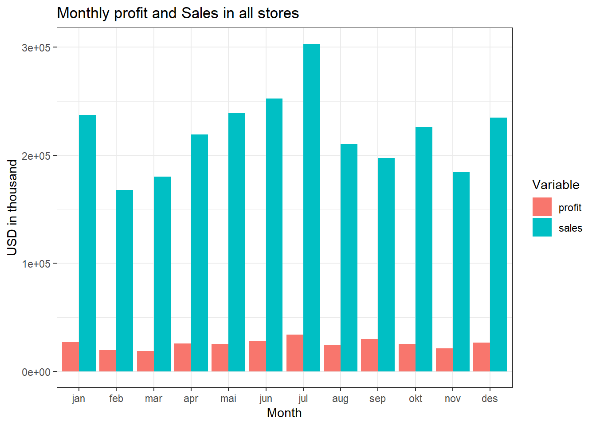

#load packages
library(tidyverse)
library(readr)
library(leaflet)
library(htmltools)
library(lubridate)PO_1005
#load data
df_final <- read.csv("https://raw.githubusercontent.com/Magnusjahren/Datapo/main/Data_po_1005_2.csv", sep = " ")
#df_final$DATE <- as.Date(df_final$DATE)
#mutate data to get lat and long in the right format for leaflet
#mutate date variable to date format
df_final <- df_final %>%
mutate(lat = lat/10000) %>%
mutate(long = long/-10000) %>%
mutate(DATE = as.Date(DATE))
df_opg3 <- df_finaloppgave 2
df_final %>% #filtering for store 12
filter(STORE == 12) %>% #grouping by brand
group_by(BRAND) %>% #summarising sales
ggplot(aes(x = DATE, y = Sum_Sales, fill = BRAND)) + #plotting
geom_col() +
labs(title = "Weekly sales of beer in Chicago by brand",
subtitle = "1992",
x = "Date",
y = "Sales in USD",
color = "Brand") +
theme_bw() +
theme(legend.position = "bottom",
legend.title = element_blank(),
axis.text.x = element_text(angle = 45, hjust = 1))
df_final1 <- df_final %>% #making a new dataframe to plot the pie chart
filter(STORE == 12) %>%
group_by(BRAND) %>%
summarise(Sum_Sales = sum(Sum_Sales))
pie1 <-ggplot(df_final,aes(x="", y=Sum_Sales, fill=BRAND)) + #plotting the pie chart
geom_bar(width = 1, stat = "identity") +
coord_polar("y", start=0) +
theme_void() +
labs(title = "Markedshare beer brands in %", fill = "Brand")df_final2 <- df_final %>% #making a new dataframe to plot the pie chart
filter(STORE == 12) %>% #filtering for store 12
rename(unemployed = unemp) %>%
rename(education = educ) %>%
rename(workingwoman = workwom) %>%
select(single, retired, unemployed, education, poverty, workingwoman) %>% #selecting the variables we want to plot
pivot_longer(cols = c("single", "retired", "unemployed", "education", "poverty", "workingwoman"), names_to = "name", values_to = "val") #making the data long
pie2 <- ggplot(df_final2,aes(x="", y=val, fill=name)) + #plotting the pie chart
geom_bar(width = 1, stat = "identity") + #making the pie chart
coord_polar("y", start=0) +
theme_void() + #removing the background
labs(title = "Customer share of beer sales in Chicago", fill = "Group") #adding title and legend#plotting the two pie charts side by side
gridExtra::grid.arrange(pie1,pie2, ncol=2) 
#Long run time, optional run pie1, pie2Salgsresultater: Oversikt over totalt salgsvolum, inntekt og enheter solgt.
Salgstrender: Analyse av salgstrender over tid og sesongmessige mønstre.
Produktytelse: Vurdering av mest solgte produkter, produkter med høy margin.
Markedsandel: Evaluering av markedsandelen i forhold til konkurrenter og bransjen.
Anbefalinger: Tiltak eller strategier for å forbedre salgsresultatene.
Oppgave 3
Samlet salgsytelse: Oversikt over konsernets totale salgsytelse per måned.
Markedsandel: Evaluering av konsernets markedsandel i forhold til konkurrenter og bransjen.
Produktkategorier: Gjennomgang av salgsytelse for ulike produktkategorier eller segmenter.
Salgstrender: Analyse av salgstrender over tid og sesongmessige mønstre.
Konkurrentanalyse: Evaluering av konkurrentenes ytelse og markedsposisjon.
Økonomiske resultater: Oversikt over økonomiske resultater og relevante indikatorer.
Anbefalinger og handlingsplaner: Forslag til tiltak for å forbedre konsernets salgsresultater.
df_opg3 <- df_opg3 %>%
mutate(profit = (Sum_Sales*PROFIT)/100) %>%
mutate(month = month(DATE,label = TRUE))#making a profit variable with actual $value
df_opg3 %>%
ggplot(aes(x=month, y=Sum_Sales, fill=BRAND)) +
geom_col()+
theme_minimal() +
theme(legend.title = element_blank()) +
labs(title = "Beer sales in Chicago", x = "Monthly(1992)", y = "")
df_plot <- df_opg3 %>%
group_by(month) %>%
summarise(sum(profit), sum(Sum_Sales)) #Make a dataframe with the monthly sum of sales and profit
df_plot <- df_plot %>%
rename(sales = `sum(Sum_Sales)`) %>%
rename(profit = `sum(profit)`) %>% #Rename to easier names
pivot_longer(cols = c("profit", "sales"), names_to = "variable", values_to = "values") #Transform the dataframe into a long format
df_plot %>%
ggplot(aes(x = month, y = values, fill = variable)) +
geom_bar(position = "dodge", stat= "identity") + #Make a bar plot and using dodge to get a bar for each variable
theme_bw() +
labs(title = "Monthly profit and Sales in all stores", x = "Month", y = "USD in thousand", fill = "Variable") #Adding labels
Oppgave 4
df_test <- df_final %>% #making a new dataframe to plot the pie chart
group_by(STORE) %>% #grouping by store
summarise(sales = sum(Sum_Sales)) #summarising sales
df_map <- df_final %>% #making a new dataframe to plot the leaflet map
select(city, lat, long, name, Sum_Sales, STORE) %>% #selecting the variables we want to plot
distinct(STORE, lat, long, .keep_all = TRUE)
map <- merge(df_map, df_test) %>% #merging the two dataframes
drop_na()pal <- colorNumeric(c(palette = "red","green"), domain = map$sales) #making a color palette
#plotting the leaflet map
map %>%
leaflet() %>% #adding the map
addTiles() %>% #adding the tiles
addCircleMarkers(
~ long, ~ lat,
label = ~ paste(city, "total income: $", sales),
radius = ~ sales/4000,
color = ~ pal(sales),
fillOpacity = 0.5,
stroke = TRUE,
weight = 1,
opacity = 1) %>% #adding the circle markers, with the size of the circle based on sales, and the color based on the color palette.
addLegend(pal = pal, values = map$sales, title = "Total Sales ($)", position = "bottomright" ) #adding the legendKan dataene benyttes til å planlegge nye utsalg? Dersom konsernledelsen ønsker å etablere et nytt utsalg, hvordan kan de benytte dataene til å finne den beste lokasjonen?
Butikkdata kan brukes til å kvantifisere den geografiske påvirkningen av hver butikk på markedet. En effektiv tilnærming er å tildele hver butikk en egen sirkel som er plassert geografisk korrekt og representerer butikkens årlige inntekt. Sirkelen antyder hvor mye av området rundt butikken som genererer inntekt. Ved å opprette et slikt kart kan vi identifisere områder der butikkjeden ikke genererer inntekter og anta at det kan være et potensielt inntektsgrunnlag i disse områdene.